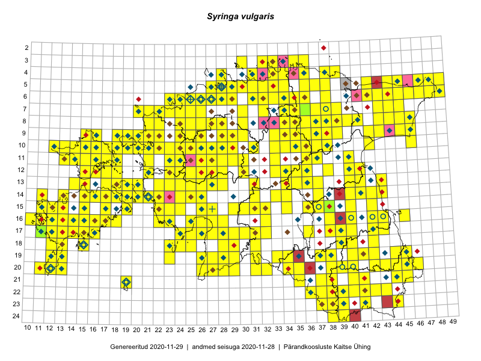

Syringa vulgaris
Uuendatud: 2016-12-02
Kaardile koondatud taksonid: Syringa vulgaris L.

Kaart põhineb 769 kirjel, neist vaatlusi 768 ja eksemplare 1. Taksonit on leitud 309 ruudust.
Kuvatud viited 20 esimesele andmebaasikirjele, ülejäänud PlutoFis
- Malle Leht: 2015-05-16: : ala
- Tiit Hallikma, Toomas Kukk, Indrek Tammekänd: 2015-06-09: 12-28: ala
- Malle Leht: 2015-07-09: : ala
- Peedu Saar, Timo Luhamäe: 2015-05-11: 11-36: ala
- Peedu Saar, Timo Luhamäe: 2015-05-11: 11-36: GPS punkt
- Peedu Saar, Timo Luhamäe: 2015-05-11: 12-36: ala
- Peedu Saar, Timo Luhamäe: 2015-05-11: 12-36: GPS punkt
- Peedu Saar, Timo Luhamäe: 2015-05-12: 07-35: ala
- Peedu Saar, Timo Luhamäe: 2015-05-12: 07-35: GPS punkt
- Toomas Kukk, Tiit Hallikma: 2015-06-09: 12-28: GPS punkt
- Tiit Hallikma, Toomas Kukk: 2015-06-09: 12-28: GPS punkt
- Peedu Saar, Liina Oja: 2015-05-22: 19-29: ala
- Peedu Saar, Liina Oja: 2015-05-22: 19-29: GPS punkt
- Peedu Saar, Liina Oja: 2015-05-22: 19-29: GPS punkt
- Rein Kalamees: 2015-06-05: 05-32: ala
- Malle Leht: 2015-08-02: : ala
- Peedu Saar, Liina Oja: 2015-05-21: 16-23: GPS punkt
- Peedu Saar, Liina Oja: 2015-05-21: 16-25: GPS punkt
- Peedu Saar, Liina Oja: 2015-05-20: 18-28: ala
- Peedu Saar, Liina Oja: 2015-05-20: 18-28: GPS punkt